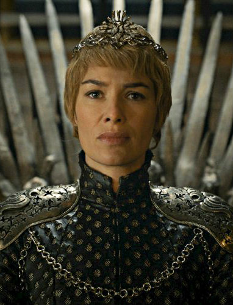
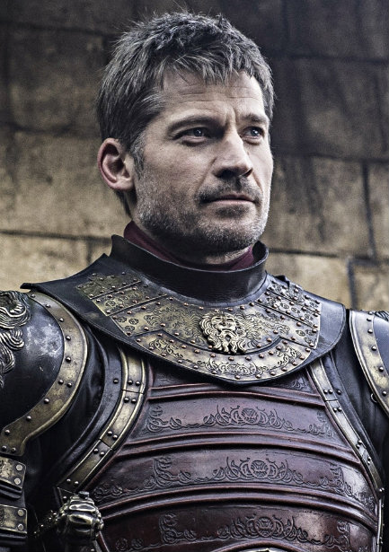
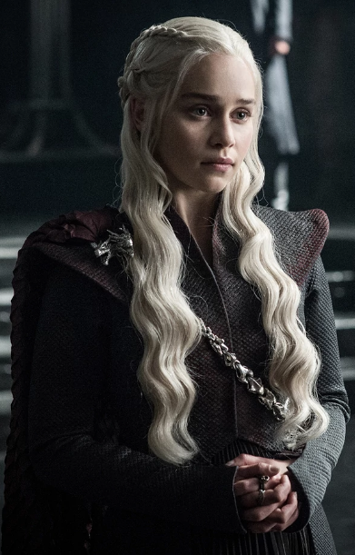
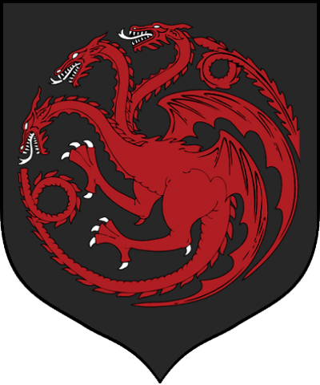

Game of Thrones
Game of Thrones is an American fantasy drama television series
created by David Benioff and D. B. Weiss. It is an adaptation
of A Song of Ice and Fire, George R. R. Martin's series of
fantasy novels, the first of which is A Game of Thrones.
It is filmed at Titanic Studios in Belfast, on location
in the United Kingdom, and in Canada, Croatia, Iceland, Malta,
Morocco, Spain, and the United States.
Starks
King Jon Snow is the son of Lady Lyanna Stark and Rhaegar Targaryen,
the Prince of Dragonstone. From infancy, Jon is presented as the bastard son
of Lord Eddard Stark, Lyanna's brother, and raised by Eddard alongside his
lawful children at Winterfell but his true parentage is kept secret from
everyone, including Jon himself. In order to escape his bastard status,
Jon joins the Night's Watch and is eventually chosen as Lord Commander.
However, his decision to allow thousands of Free Folk safe passage through
the Wall alienates many of his black brothers, culminating in a mutiny
where Jon is killed but later revived by Melisandre. Freed from his
Night's Watch vows, Jon executes the mutineers and joins his cousin,
Sansa Stark, in building an army to retake Winterfell from House Bolton.
After securing help from a few other Northern Houses and the Vale of Arryn,
they successfully retake the castle from Ramsay Bolton, restoring House Stark's
dominion over the North with Jon being declared the new King in the North
by the Northern Lords.
Princess Sansa Stark is the eldest daughter of Lord Eddard Stark
of Winterfell and his wife Lady Catelyn, sister of Robb, Arya, Bran and
Rickon Stark, and "half-sister" of Jon Snow. She initially starts off
as a soppy, slightly petulant girl with a very naive view of the world,
but as time goes on and she and her family suffer one cruelty and betrayal
after another, she becomes a more hardened and learned individual.
Princess Arya Stark is the third child and second daughter of
Lord Eddard Stark and his wife, Lady Catelyn Stark. After narrowly
escaping the persecution of House Stark at the hands of House Lannister,
Arya is trained as a Faceless Man at the House of Black and White in Braavos,
and uses her new skills to bring those who have wronged her family to justice.
Lannisters

Queen Cersei I Lannister is the widow of King Robert Baratheon and Queen of the Seven Kingdoms. She is the daughter of Lord Tywin Lannister, twin sister of Jaime Lannister and elder sister of Tyrion Lannister. She has an incestuous relationship with Jaime, who is secretly the father of her three children, Joffrey, Myrcella and Tommen.

Ser Jaime Lannister is the eldest son of Tywin, younger twin brother of Cersei, and older brother of Tyrion Lannister. He is involved in an incestuous relationship with Cersei, and unknown to most, the biological father of her three children, Joffrey, Myrcella, and Tommen.
Tyrion Lannister is the youngest child of Lord Tywin Lannister and younger brother of Cersei and Jaime Lannister. A dwarf, he uses his wit and intellect to overcome the prejudice he faces.
Targaryens

Queen Daenerys I Targaryen, also known as Dany and Daenerys Stormborn, is the younger sister of Rhaegar Targaryen and Viserys Targaryen, the paternal aunt of Jon Snow, and the youngest child of King Aerys II Targaryen and Queen Rhaella Targaryen, who were both ousted from the Iron Throne during Robert Baratheon's rebellion.
Prince Rhaegar Targaryen was the eldest son and heir to King Aerys II Targaryen, holding the title of Prince of Dragonstone. He was the older brother of Viserys and Daenerys Targaryen and husband of Elia Martell, with whom he had two children: Rhaenys and Aegon Targaryen. Secretly, however, he also had a son with Lyanna Stark: Jon Snow, who was raised by Lyanna's brother Eddard Stark as his bastard son to protect the child from those that sought the destruction of House Targaryen after Robert's Rebellion.[1] Rhaegar was said to have ignited the rebellion after abducting Lyanna Stark. Her betrothed, the future King Robert Baratheon, slew Rhaegar at the climactic Battle of the Trident.
House Stark
House Stark of Winterfell is a Great House of Westeros, ruling over the vast region known as the North and the Vale as Kings in the North from their seat in Winterfell, recently retaken by the Starks from House Bolton. It is by far one of the oldest lines of Westerosi nobility, claiming a line of descent stretching back over eight thousand years. The head of the house is the Lord of Winterfell. Before the Targaryen conquest, the leaders of House Stark ruled over the region as the Kings in the North. Jon Snow is the current King in the North and the Vale, partially due to the allegiance of Petyr Baelish, the Lord Regent of the Vale, to House Stark.
House Lannister
House Lannister of Casterly Rock is one of the Great Houses of Westeros, one of its richest and most powerful families and oldest dynasties. It is also the current royal house of the Seven Kingdoms following the extinction of House Baratheon of King's Landing, which had been their puppet house anyway.
House Targaryen

House Targaryen is a former Great House of Westeros and was the ruling royal House of the Seven Kingdoms for three centuries since it conquered and unified the realm, before it was deposed during Robert's Rebellion and House Baratheon replaced it as the new royal House. The few surviving Targaryens fled into exile to the Free Cities of Essos across the Narrow Sea. Currently based on Dragonstone off of the eastern coast of Westeros, House Targaryen seeks to retake the Seven Kingdoms from House Lannister, who formally replaced House Baratheon as the royal House following the destruction of the Great Sept of Baelor.